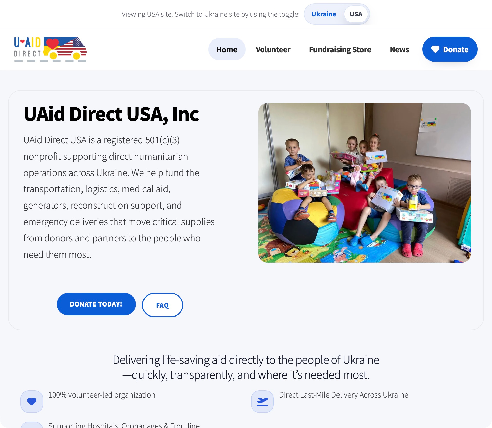
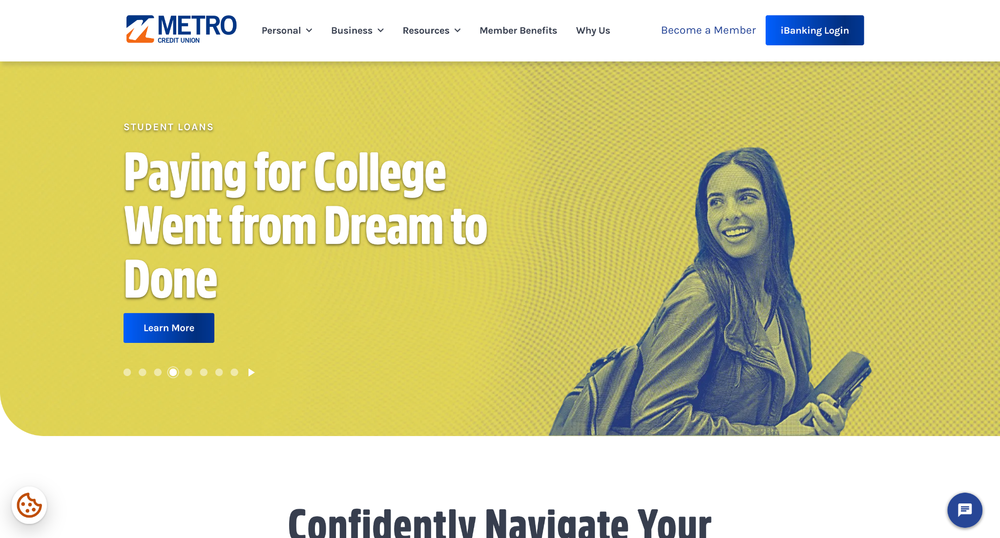
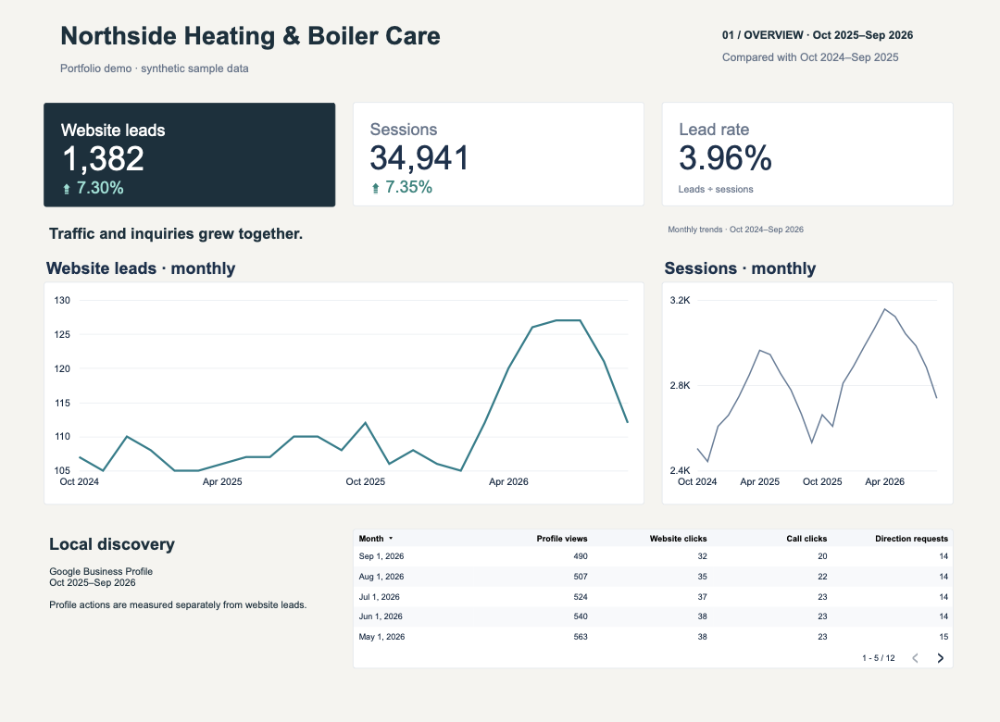

Selected Work
Useful websites. Clearer decisions.
Explore a regional nonprofit website, collaborative credit-union development, and a reporting concept. Each note explains the scope and contributions.
Website build · WordPress multisite
UAid Direct
A regional WordPress multisite for USA and Ukraine audiences. The work included custom homepage and news templates, reusable ACF content layouts with 11 editor choices, and region-aware navigation.
The Help content is available in English and Ukrainian. That is a scoped multilingual feature, not a claim that the entire site was translated.
- Built custom homepage and news templates for the regional sites
- Created 11 reusable ACF content layout choices for editors
- Designed regional entry points and navigation for USA and Ukraine
- Presented Help content in English and Ukrainian
- Built responsive templates for pages and content

Strategy · Development · Support
Metro Credit Union
Website strategy, development, and ongoing support contributed in-house, in collaboration with agency partners. The work covered a large content environment with an emphasis on consistent implementation and maintainability.
The screenshot shows Metro's public site navigation and Paying for College carousel slide. The work spanned the wider website and its measurement.
- Developed Craft CMS pages, content, and layouts
- Handled day-to-day fixes and ongoing website support
- Supported GA4/GTM tagging and reporting
- Worked on technical SEO, location pages, and Google Business Profile support
- Contributed to website strategy alongside agency partners

Looker Studio · Synthetic portfolio demo
Northside dashboard
An eight-page Looker Studio reporting concept for a fictional heating and boiler-care business. The dashboard explores acquisition, lead quality, site search, service areas, and operational follow-up.
Every figure shown is synthetic sample data. Northside is not a real client, and the modeled trends are not business results.
- Mapped acquisition, lead quality, search, and service-area questions to eight report pages
- Separated traffic, inquiry, and modeled outcome views
- Added labels, definitions, and chart context for review
- Marked every view as synthetic sample data

Have a website or measurement question?
We can discuss a full build, a focused redesign, a reporting need, or ongoing support.
Discuss a project